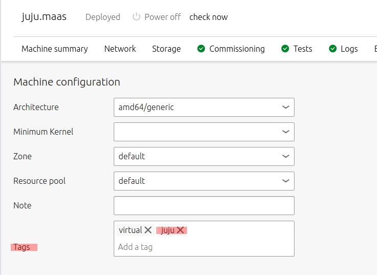
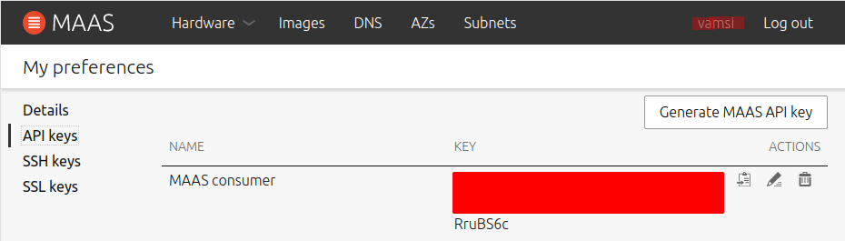

MAAS handles the comissioning/deployment of hardware till the OS installation. Once the OS is installed, juju takes over by using MAAS API to manage software/packages on the deployed machines via the MAAS API.
Juju is a generic package manager for cloud based machines. Not just a MAAS cloud, presumably, many public clouds.
MAAS_Server
Juju asks the cloud API (MAAS) to provision a controller for it within the cloud. To avoid wasting a machine for this (when you have a tiny home lab), use/adapt instructions from Robert @ WiredTron to setup a VM controlled by MAAS
Follow instructions at
virt-manager to launch the UIAfter starting the VM (from virt-manager), click on the info button and change the network for the NIC to "host-bridge" (Assuming you configured it per the notes at Setup for VM).
Now starting the VM should make PEX hit MAAS and start maas enlisting.
virshqemu+ssh://vamsi@192.168.23.1/system (UserName on host @ IP of the machine)user login pwdUUID from VM Overview pageThe power controller from MAAS needs to SSH in to control virsh. Make sure the ssh server is installed per SSH.md.
Note that https://maas.io/docs/vm-host-networking#heading--set-up-ssh says some more setup is needed to allow the maas user from the rack controller to access the VMs. But looks like it is not neeed if MAAS is supplied with user creds for the host on which the VM resides.
virsh -c qemu+ssh://vamsi@192.168.23.1/system list --all said connection refusedvamsi on MAAS. Switch to Admin and the Commission menu becomes available. Once comissioned, switch back to vamsi for deploying.Per instructions at https://maas.io/docs/vm-host-networking#heading--set-up-ssh for snap MAAS install
sudo mkdir -p /var/snap/maas/current/root/.ssh
cd /var/snap/maas/current/root/.ssh
sudo ssh-keygen -f id_rsa
cat id_rsa.pub >> ~vamsi/.ssh/authorized_keys
sudo chown vamsi.vamsi ~vamsi/.ssh/authorized_keys
I was able to get this to work for a while but after that something went totally haywire and I am not sure what.
Unending problems: I racked my brain for what I changed to mess this up and remember the DNS settings. Not sure what I did but it is consistent with the maas ui error about temporarily not able to resolve things.
👉 VM on the mass network was unable to hit the ubuntu servers to download the apt package. DNS failure given the error msgs.
Some more research later, updated the br0 section's nameservers section as followes
bridges:
br0:
interfaces: [enxd037457fc945]
addresses: [192.168.23.1/24]
dhcp4: false
dhcp6: false
nameservers:
- addresses: [192.168.23.1]
+ addresses: [8.8.8.8, 192.168.23.1]
Recreated the VM and this time, everything worked and in comissioning, I can see it getting the lldp package. All good then!
sudo snap remove juju --purge to clean it outrm -rf ~/.local/share/jujurm -rf ~/.kubesudo snap install juju --classicjuju installs a juju-controller in the cluster that it manages. In my case (light duty cluster), I don't want to lose an entire node to juju. So two things (See MAAS Setup)


This is the key that Juju uses to authenticate itself when talking to the MAAS API. Click on the admin vamsi user and pick the API Key. Like so..

The user key chosen is important
There are command line args to use this but I have a yaml file prepared for this with the following contents to do things the gitops way.
clouds: # clouds key is required.
devmaas: # cloud's name
type: maas
auth-types: [oauth1]
endpoint: http://192.168.1.195/MAAS
To use this, run the following.
vamsi@maas:~/bitbucket/infrastructure$ juju add-cloud --local devmaas configs/juju/juju-maas-cloud.yaml
Cloud "devmaas" successfully added to your local client.
You will need to add a credential for this cloud (`juju add-credential devmaas`)
before you can use it to bootstrap a controller (`juju bootstrap devmaas`) or
to create a model (`juju add-model <your model name> devmaas`).
To confirm, exec
vamsi@maas:~/bitbucket/infrastructure$ juju clouds --local
Only clouds with registered credentials are shown.
There are more clouds, use --all to see them.
You can bootstrap a new controller using one of these clouds...
Clouds available on the client:
Cloud Regions Default Type Credentials Source Description
devmaas 1 default maas 0 local Metal As A Service
localhost 1 localhost lxd 0 built-in LXD Container Hypervisor
juju add-credential devmaas
This operation can be applied to both a copy on this client and to the one on a controller.
No current controller was detected and there are no registered controllers on this client: either bootstrap one or register one.
Enter credential name: devmaas-admin-creds
Regions
default
Select region [any region, credential is not region specific]:
Using auth-type "oauth1".
Enter maas-oauth: <API Key From Admin user>
Credential "devmaas-admin-creds" added locally for cloud "devmaas".
Test by dumping out ~/.local/share/juju/credentials.yaml
vamsi@MAAS:~/bitbucket/infrastructure$ cat ~/.local/share/juju/credentials.yaml
credentials:
devmaas:
devmaas-admin-creds:
auth-type: oauth1
maas-oauth: LEBzWzLR2fM4Yy5TeK:sxVqY69ybHewPyd4VB:XPnLcHhybYcAhgsRwn63axV8eFsZyyzM
vamsi@maas:~/bitbucket/kubernetes$ juju show-credentials
client-credentials:
devmaas:
devmaas-admin-creds:
content:
auth-type: oauth1
juju update-credential [options] [<cloud name>] [<credential-name>]
juju remove-credential devmaas demaas-admin-creds
One special things to consider here
Juju by default uses an older LTS version till the new LTS version is atleast at .1 release. So even on 20.04, it still asks for bionic and might bomb. To force focal, use the folowing (see this)
juju bootstrap --bootstrap-series=focal --constraints tags=juju devmaas maas --debug
juju list-controllers
vamsi@maas:~/bitbucket/kubernetes/configs$ juju list-controllers
Use --refresh option with this command to see the latest information.
Controller Model User Access Cloud/Region Models Nodes HA Version
maas* default admin superuser devmaas/default 2 - - (unknown)
The normal process is to use juju destroy-controller <controller name>. In my case, maas died because of other regions (messed up dns failed deployment) but juju seems to have recorded that there is a controller for devmaas. destroy-controller asks the cloud API (Maas API) to delete the controller node but that was never allocated to begin with and so fails.
If the normal one fails, Use juju kill-controller <controller-name> as the last resort
Apparently, not last enough. This still complains that the API is not connected etc.
👉 lastest resort
Apparently there is an unregister commands that simply removes it from a local controllers.yaml file
juju unregister <controller-name>
juju bootstrap --constraints tags=juju devmaas juju-controller
vamsi@maas:~/bitbucket/kubernetes/configs$ juju bootstrap --constraints tags=juju devmaas juju-controller
Creating Juju controller "juju-controller" on devmaas/default
Looking for packaged Juju agent version 2.8.1 for amd64
Launching controller instance(s) on devmaas/default...
- wccyw3 (arch=amd64 mem=3.8G cores=1)
Installing Juju agent on bootstrap instance
Fetching Juju Dashboard 0.1.8
Waiting for address
Attempting to connect to 192.168.23.2:22
Connected to 192.168.23.2
Running machine configuration script...
Taking a very long time (15min +), so logging in to see whats going on
ssh ubuntu@192.168.23.2 worked right away.
Other hits on the net show that this can be because the node (juju-controller) is unable to connect to the internet to get needed packages.
I cannot even do a ping 192.168.1.195, the local IP of the maas machine. So something bad for sure. Can't even install tracert to see what is going on
👉 I thought I had fixed DNS issues by plugging in google's DNS. However, turns out routing was completely broken. Just could not get netplan based source routing to work. Replaced with simpler routing and got things to work.
vamsi@maas:/etc/netplan$ !juju
juju bootstrap --constraints tags=juju devmaas juju-controller
Creating Juju controller "juju-controller" on devmaas/default
Looking for packaged Juju agent version 2.8.1 for amd64
Launching controller instance(s) on devmaas/default...
- wccyw3 (arch=amd64 mem=3.8G cores=1)
Installing Juju agent on bootstrap instance
Fetching Juju Dashboard 0.1.8
Waiting for address
Attempting to connect to 192.168.23.3:22
Connected to 192.168.23.3
Running machine configuration script...
Bootstrap agent now started
Contacting Juju controller at 192.168.23.3 to verify accessibility...
Bootstrap complete, controller "juju-controller" is now available
Controller machines are in the "controller" model
Initial model "default" added